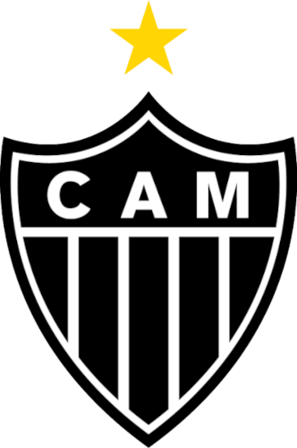
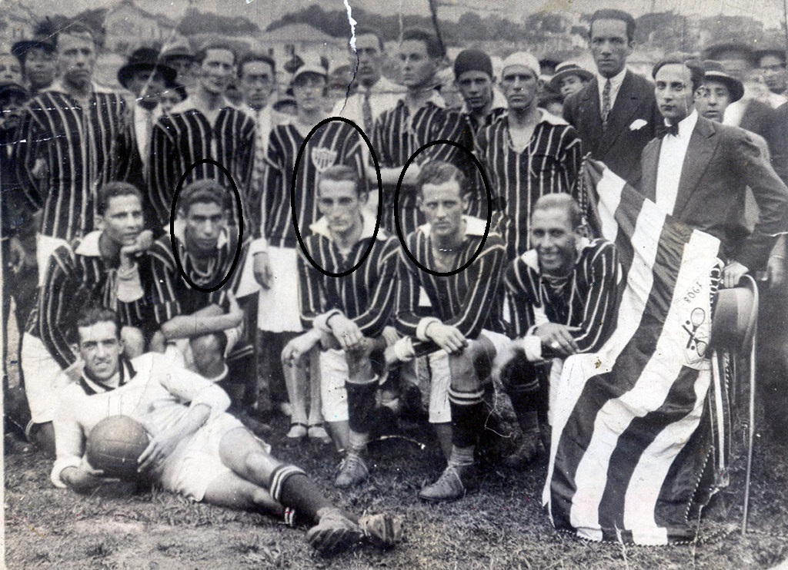

Esta página é pra você que quer conhecer ou relembrar a historia,conquistas,idolos e tudo sobre o nosso tão amado Galão da massa

Sinopse
O Clube Atlético Mineiro (CAM), mais conhecido como Galo, foi fundado em 25 de março de 1908 por um grupo de estudantes de Belo Horizonte (Minas Gerais). Foi inicialmente chamado de Athlético Mineiro Football Club, adotando em 1913 seu nome definitivo, seu símbolo e nome mais conhecido:Galo, mascote oficial desde 1930 e um dos mais belos mascotes do Brasil. O nome Atlético Mineiro é conhecido em muitos esportes, entretanto se destaca com louvor no futebol nacional e internacional.
Historia
Início
O Clube Atlético Mineiro(CAM) foi fundado no dia 25 de março de 1908 por um time de jovens estudantes. No dia 21 de março de 1909 o Tão conhecido clube Atlético Mineiro(na época chamado de Athlético) disputava a sua primeira partida contra o Sport Club, vencendo a partida por 3x0 com gols de: Aníbal Machado, Zeca Alvez e Mário Neves. Anos se passaram e em 1914 foi realizada a primeira competição oficial em Minas intitulada de taça Bueno Brandão, e o maior e melhor time se fez campeão, o Atlético Mineiro ganhou. No ano seguinte no ano de 1915 foi realizada o primeiro campeonato mineiro, entretanto infelizmente o Atlético não foi campeão, por 10 anos(1915 até 1925) o América foi campeão da taça do campeonato mineiro. Para acabar com a liderança do América no campeonato, o Galo reuniu grandes astros do futebol, dirigdo por Chico Neto, e depois assumido por Eugênio Medgyessy, o time contava com grandes astros como: Carlos Brant, Álvaro lopes(nariz), Mário de Castro, Jairo e Said Paulo. Os jogadores: Mário de Castro, Jairo e Said Paulo ficaram conhecido na historia como o Trio Maldito e com esse trio o Atlético conseguiu conquistar o campeonato Mineiro de: 1926, 1927, 1931 e 1932. No ano de 1933 o jogador Guaracy Januzzi (de apelido Guará) entrou no Atlético MG, e dois anos depois o lendario jogador Olavo Leite (Kafunga), entra no time também, essa dupla conquista em 1936 o campeonato mineiro, e no ano seguinte 1937, José procópio (Zézé procóprio) entra no time, sendo campeao em 1938 e 1939 pelo campeonato Mineiro. E desde aquela época a rivalidade entre Atlético e cruzeiro se dava presente em campo.

Trio maldito.
Estádio
A Arena MRV é o estádio do Atlético mg, fica localizado no bairro califórnia, região noroeste de Belo Horizonte, as obras tiveram início em 2020 e finalizdas em 2023 feito pelo arquiteto Bernardo Farkasvölgyi, e obras feitas pela Racional Engenharia. Com capacidade para 46 mil torcedores a Arena MRV é o estádio mais tecnológico da América Latina, contanto com 112 camarotes, 42 bares e lanchonetes, e sete cozinhas.